UD3. Introducció a Python
Al tema anterior, per començar a vore els principis de la programació estructurada hem vist algorismes en ordinograma i la seua implementació en Python. En este tema aprofundirem un poc més en Python pel que fa als operadors i expressions, així com a l'entrada i eixida de dades. A més, com que més endavant es vorà el llenguatge Java, conforme anem veient coses en Python, anirem dient ja les diferències en java. Estes diferències solen ser iguals en Java i en C.
1. Característiques bàsiques de Python
Python és un llenguatge creat a finals dels 80 per Guido Van Rossum, i deu el seu nom a l'afició pel grup còmic britànic Monty Python.
És un llenguatge de programació interpretat, de tipificació dinàmica i multi plataforma. És de propòsit general, fins i tot per a la creació de scripts.
1.1. Què necessitem per a programar en Python?
Ho podem fer de diverses maneres:
-
Usar un intèrpret online (no cal instal·lar res)
Per exemple, onlinegdb.com. Caldrà seleccionar el llenguatge Python 3, escriure el codi i polsar Run.
-
Instal·lar l'intèrpret de Python: www.python.org/downloads
Una vegada instal·lat (Linux ja el porta) podrem:
- Provar comandaments en mode interactiu: en el terminal escriurem python3. Entrarem en el mode interactiu: després de fer intro en cada instrucció, s'executarà.
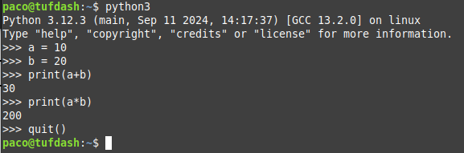
-
Escriure el programa en un fitxer de text: Li direm, per exemple, holaMon.py, i l'executarem amb: python3 holaMon.py. No cal compilar res, perquè Python és interpretat.
-
Usar un IDE (Entorn de Desenvolupament Integrat): Per exemple, Visual Studio Code. Potser calga instal·lar l'extensió de Python. Escriurem el nostre programa, el guardarem (holaMon.py) i l'execurarem amb la icona del triangle.
1.2. Estructura d'un programa en Python
Un programa en Python té una estructura molt simple:
- No s'ha de posar punt i coma després de cada instrucció.
- No es posen delimitadors de bloc de programa. Simplement se sangra.
- No cal indicar el tipus de dades de les variables.
Qualsevol programa escrit en Pyhton té la següent estructura:
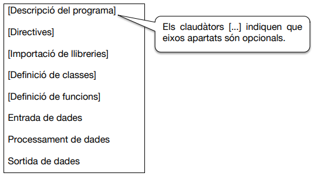
Veiem que l'única part (pràcticament) necessària en un programa és l'entrada, processament i la sortida de dades, com en qualsevol llenguatge de programació.
En Python estos apartats poden variar de posició.
Veiem uns exemples i els analitzem.
L'exemple més simple, mostrar un missatge per pantalla:
| Python | |
|---|---|
Un altre exemple més complet:
- Descripció del programa
- Importació de llibreries
- Definició de funcions
- Entrada de dades
- Processament de dades
- Sortida de dades
Exemple
Copia i apega el codi anterior en l'IDE que tingues de Python i executa'l per vore què fa.
Comentem, per adamunt, algunes coses del programa que més endavant ampliarem:
- Descipció del programa. Son comentaris, no s'executen.
- A l'import indiquem que necessitem una llibreria: conjunt de funcions que ja estan implementades i les podem fer servir als nostres programes. En este exemple la llibreria és time i ens cal per a usar la funció time.sleep() que fa que el prgrama pare en eixe punt uns segons (2 en este cas).
- Desprès tenim la definició d'una funció, que comença amb la paraula reservada def. Tot el que es pose dins del bloc de la definició d'una funció ha d'anar sagnat (en este cas és només la instrucció return).
- Després ja tenim el nostre programa pròpiament dit, on veiem que:
- Les línies no tenen cap sagnat (van just a l'esquerra)
- Amb els input aconseguim que s'introduisquen dades per teclat.
- Es fa la crida a la funció que hem definit abans (areaRectangle).
- Finalment mostrem a l'usuari el resultat (print).
1.3. Noms de variable i funcions en Python
Abans hem vist que hem posat noms de variable i funcions. Estos noms han de tindre unes regles, que solen ser les mateixes en tots els llenguatges, encara que poden variar un poc. En Python estes són les regles per als noms de variables i funcions:
Regles per a noms de variables i funcions en Python
- Son una combinació de lletres minúscules [ a...z ], majúscules [ A...Z ], dígiint [ 0...9 ] i el caràcter subratllat [ _ ].
- Poden tindre qualsevol longitud.
- S'admeten els accents, la ç i la ñ.
- No poden haver símbols especials ni operadors:
[, !, @, #, $, %, *, ... - No poden començar amb dígit.
- No poden ser paraules reservades:
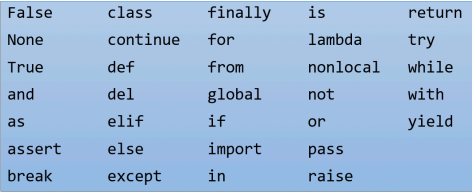
1.4. Variables
Les variables són els llocs on es guarda la informació (per exemple, els llocs on es guarda cada dada introduïda per teclat).
Es poden classificar en globals i locals:
- Variables globals: es creen fora de qualsevol funció. Es pot accedir a elles des de qualsevol part del programa.
- Variables locals: es creen dins d'una funció. Es pot accedir a elles només des d'eixa funció.
Més endavant vorem els tipus de dades (enter, caràcter, etc) de les variables.
1.5. Comentaris
En algunes parts del programa cal que el programador pose anotacions per a:
- Recordar el que ha fet, per a futures modificacions.
- Indicar a altres programadors com s'ha fet alguna cosa.
- Indicar la data (o autor, etc.) de creació del programa.
Tipus de comentaris:
- D'una línia:
- Precedit per coixinet: # soc un comentari
- Entre cometes simples: 'soc un comentari'
- Entre cometes dobles: "soc un comentari"
- De diverses línies:
- entre trios de cometes simples: ' ' '
- entre trios de cometes dobles: " " "
- De documentació de funcions: si posem un comentari entre cometes en la primera línia dins d'una funció (per a explicar què fa) després podrem accedir a eixe comentari des d'altres parts del programa. Ara ho veurem.
Veiem en este programa exemples dels diferents tipus de comentaris:
Ens alguns IDE com el Visual Studio Code, si poses el cursor damunt del nom d'una funció et mostra els comentaris que has posat en ella:

1.6. Delimitacions
Son símbols especials que permeten al compilador/intèrpret reconéixer les diferents parts del programa.
El més important és el finalitzador de sentències, que, en molts llenguatges de programació (com C i Java) és el pun i coma ( ; ) però Python fa servir simplement el bot de línia.
Ací tenim els delimitadors que s'usen en Python.
| Python | C i Java | Nom | Utilitat |
|---|---|---|---|
| Salt de línia | ; | Finalitzador | - Finalitzar una instrucció simple o una declaració de variables |
| Tabulació | { } | Bloc | - Delimitar inici i fi d'un bloc de codi |
| , | , | Separador | - Separar els elements d'una llista |
| ( ) | ( ) | Parèntesi | - Agrupar operacions - Paràmetres de funcioins |
| [ ] | [ ] | Claudàtors | - Per a vectors, llistes... |
2. Tipus de dades
Les dades que manegen els programes són de distints tipus: lletres, números sense decimals, amb decimals...
Per tant, les variables seran d'un tipus determinat. En la majoria de llenguatges de programació, abans d'utilitzar una nova variable, cal definir-la (declarar-la): indicar de quin tipus és. Però en Python no cal. Simplement el tipus de la variable serà del mateix tipus que el valor que li s'assigne.
Veiem els distints tipus que solen tindre els llenguatges de programació.
2.1. Tipus elementals
En Python hi ha 4 tipus bàsics: enter, amb decimals, cadena i lògic.
Altres llenguatges, com C i Java, en tenen més, per a indicar enters xicotets o grans, amb signa o sense... Igual que per a números amb decimals.
2.1.1. Números enters: int
Números enters (sense decimals).
Quan posem un número s'interpreta que està en sistema de numeració decimal. Però podem dir-li que ho interprete com a binari, octal o hexadecimal:
| Python | |
|---|---|
El print mostra el número en sistema decimal.
2.1.2. Números amb decimals: float
Números amb decimals
| Python | |
|---|---|
2.1.3. Lògics: bool
Serveix per si una variable volem que tinga 2 únics estats (vertader o fols). Els únics valors que pot tindre una variable d'este tipus són True o False.
Ens servirà per a quan usem sentències condicionals (ja entrarem en detall):
NOTA
En C++ i Java és true i false (en minúscula). C no té eixe tipus de dades com a tal (usa el 0 per a false i l'1 per a true).
2.1.4. Cadenes: str
És el tipus de dades per a guardar una cadena de caràcters (un nom de persona, per exemple). Una dada de tipus str és una successió de 0 o més caràcters dins de cometes simples o dobles (encara que es recomana entre cometes dobles, ja que molts llenguatges només admeten les dobles).
Per a guardar cadenes els llenguatges utilitzen formes distintes:
- En C no és un tipus sinó un vector de caràcters (ja vorem els vectors).
- En Java no és un tipus, sinó una classe (ja vorem les classes).
- En Python sí que és un tipus de dades.
2.1.4.1. Seqüències d'escapament
Per a poder posar unes cometes dobles dis d'una cadena amb cometes dobles es pot usar el caràcter d'escapament \. També per a cometes simples:
| Python | |
|---|---|
En una cadena de text també podem utilitzar este caràcter d'escapament per a representar diverses accions:
| Python, C i Java | Acció | Exemple | Resultat |
|---|---|---|---|
| \n | Nova línia | print("Hola\nAdéu") | |
| \t | Tabulador | print("Hola\tAdéu") | Hola Adèu |
| \r | Retorn de carro | print("Hola\rTu") | Tula |
| \b | Backspace | print("Hola\bAdéu") | HolAdéu |
Encara que les més emprades són \n i \t.
Totes estes seqüències d'escapament també es poden usar en C i Java.
2.2. Tipus composts
Els tipus simples (que acabem de veure) serveixen quan hem de guardar una informació simple. És a dir, formada per una sola dada (una temperaura, un nom, una edat...)
Però si volem guardar en una variable el domicili d'un client (format per un carrer, número, codi postal...) o una data (dia, mes any), el programador haurà de definir un tipus de dades compost. Estos tipus de dades compostos els vorem més endavant.
2.3. Declaració de variables
Una variable és una porció de memòria (RAM), representada per un nom (identificador) on es guardarà un valor que pot variar al llarg de l'execució d'un programa.
Declarar una variable vol dir indicar de quin tipus serà eixa variable. Depenent del llenguatge de programació caldrà declarar les variables o no. Per tant, atenent a este criteri, tenim 2 tipus de llenguatges de programació:
2.3.1. Llenguatges de tipificació estàtica (C, Java... però no Python)
Estos llenguatges obliguen a indicar de quin tipus serà una variable abans d'usar-la. Després, al moment de fer servir les variables, el llenguatge controla que el valor que s'assigne a una variable corresponga al tipus de la variable. Si no és el cas, donarà error-
| Java | |
|---|---|
2.3.2. Llenguatges de tipificació dinàmica (Python, PHP...)
En estos llenguatges no es declara la variable prèviament. Simplement quan se li assigna un valor, la variable agafa el tipus d'eixe valor. I pot variar de tipus cada vegada que se li assigna un nou valor.
Com veiem a l'exemple, no tindrem les situacions d'error dels llenguatges de tipificació estàtica (ja que no s'ha de declarar la variable i poden canviar de tipus). Però pot ser un desavantatge ja que podria ser que volguérem que en fer la divisió de 11/4 volguérem guardar la part entera (2) i no 2.75. Ens pot portar a situacions inesperades o inconsistents. Caldrà anar en compte en estos casos.
NOTA
Si en algun moment parlem de "declarar" una variable en Python, ens estarem referint al primer moment del programa on li s'assigna un valor a eixa variable.
2.4. Àmbit i visibilitat
NOTA
Aquestos conceptes s'explicaran en detall quan veiem la programació modular (funcions). No obstant, veiem un avanç.
Les variables poden "declarar-se" (començar a usar-se) en qualsevol part del programa, però segons el lloc on siguen declarades, les podrem fer servir només en alguna part (variables locals) o bé en tot el programa (variables globals).
Exemple 1
La variable a és local a la funció "funcioneta"
| Python | |
|---|---|
Si una variable està declarada dins d'una funció, només podem accedir a ella dins d'eixa funció.
Exemple 2
Si una variable "declarada" (primer ús) fora de les funcions, podrem accedir a ella des de qualsevol lloc del programa (bé, sempre després de ser declarada). Però ja vorem que no convé declarar variables globals.
L'àmbit i visibilitat d'una variable són conceptes íntimament relacionats. Fan referència a des d'on es pot accedir a una variable:
- La visibilitat és la propietat que indica si es pot accedir o no a una variable en un punt determinat del programa.
- En l'exemple 1:
- Dins de la funció "funcioneta" sí que hi ha visibilitat de 'a'.
- Fora de la funció "funcioneta" no hi ha visibilitat de 'a'.
- En l'exemple 2:
- En tot el programa sí que hi ha visibilitat de 'a'.
- En l'exemple 1:
- L'àmbit és la zona del programa on és visible una variable.
- En l'exemple 1, l'àmbit de 'a' és dins de la funció "funcioneta"
- En l'exemple 2, l'àmbit de 'a' és a tot el programa.
En C i Java, a més de definir variables locals a una funció es poden definir locals a un bloc de codi, tancat entre claus { }. En eixe cas, eixes variables només poden ser accedides dins d'eixe bloc de codi.
En Python un bloc seria el trós de codi (seguit) amb el mateix sagnat (o subsagnat). Però si una variable es declara en eixe bloc, en Python sí que podem accedir des d'altres blocs, encara que no és recomanable:
- El primer ús de "major" es fa en este bloc
- Però Python em permet usar-la fora del bloc
En canvi, és recomanable declarar la variable en el "bloc de fora":
- Declarem la variable en el "bloc de fora"
- ... ja que vaig a usar-la en eixe bloc
3. Operadors
Anem a veure els distints operadors que solen tindre els llenguatges de programació i a contruir expressions amb elles, així com la forma d'introduir dades per teclat i mostrar resultats per pantalla.
3.1. Operadors aritmètics
| Python | C i Java | Significat | Observacions |
|---|---|---|---|
| + | + | Suma | |
| - | - | Resta o signe | |
| * | * | Multiplicació | |
| / | / | Divisió amb decimals (11/4 -> 2.75) | En C i Java: (11/4 -> 2 -- 11/4.0 -> 2.75) |
| // | NO | Divisió entera (11//4 -> 2) | |
| % | % | Residu divisió entera (21%4 -> 1) | |
| ** | NO | Potència (2**3 -> 8) |
3.2. Operadors relacionals
| Python | C i Java | Significat |
|---|---|---|
| == | == | Igual |
| != <> | != | Distint |
| < | < | Menor |
| <= | <= | Menor o igual |
| > | > | Major |
| >= | >= | Major o igual |
Ja veurem que, principalment, estos operadors s'utilitzen en les condicions de les instruccions if i while.
Exemples
3.3. Operadors lògics
Ja veiérem al primer tema quins eren els operador l'ogics i com actuaven (recordeu les "taules de veritat"). Veiem ara com es representen en Python, C i Java:
| Python | C i Java | Significat |
|---|---|---|
| or | || | Vertader si algun és vertader |
| and | && | Vertader si els 2 són vertaders |
| not | ! | El contrari |
Exemples d'operadors lògics
| Python | |
|---|---|
3.3.1. Curtcircuit d'expressions
Si recordem les taules de veritat, podem afirmar que...
- false AND ... --> false
- true OR ... --> true
Per tant, com les expressions s'avaluen d'esquerra a dreta, en el moment en què el compilador puga assegurar el valor final de l'expressió lògica (True o False), pararà d'avaluar-la. Esta manera de treballar s'anomena curtcircuit d'expressions. Això ens dóna un benefici pel que fa al control d'errors i a la valocitat d'execució.
Exemples
Si eldescompte1és major que 0, ja no es comproven les altres 2 expressions i passa a executar-se directament el print.
| Python | |
|---|---|
Exercici sobre el curtcircuit d'expressions
Què passarà en cada cas?
| Cas A | |
|---|---|
| Cas B: Mateix programa però amb els següent if en compte de l'anterior | |
|---|---|
3.4. Operador d'assignació
Este operador ja ha aparegut en molts exemples. S'utilitza quan volem emmagatzemar un valor en una variable. En Python i en la majoria de llenguatges de programació, l'operador d'assignació és el símbol igual (=).
| Python | C i Java | Significat |
|---|---|---|
| = | = | Assignació |

És a dir: primer s'avalua la part de la dreta, i després s'assigna eixe resultat a la variable esquerra.
Exemple
Per descomptat, l'assignació és destructiva (com es veu a l'exemple): sempre que es fa una assignació elimina el valor antic de la variable. És a dir, només pot guardar una dada en un moment determinat.
Si volem assignar un mateix valor a moltes variables també ho podem fer així (també en C i Java):
| Python | |
|---|---|
3.5. Operadors aritmètics reduïts (operadors aritmètics i d'assignació)
L'operador d'assignació que hem vist (=) assigna un valor a una variable. Però si el que volem fer és augmentar (o disminuir) el valor que ja té la variable, podem usar els operadors aritmètics reduïts.
| Python | C i Java | Significat | Assignació reduïda | Assignació equivalent |
|---|---|---|---|---|
| += | += | Suma i assignació | x += y | x = x + y |
| -= | -= | Resta i assignació | x -= y | x = x - y |
| *= | *= | Producte i assignació | x *= y | x = x * y |
| **= | NO | Potència i assignació | x **= y | x = x ** y |
| /= | /= | Divisió i assignació | x /= y | x = x / y |
| %= | %= | Residu i assignació | x %= y | x = x % y |
| //= | NO | Divisió entera i assignació | x //= y | x = x // y |
| NO | ++ | Autoincrement | x++ | x = x + 1 |
| NO | -- | Autodecrement | x-- | x = x - 1 |
Com veiem, estos dos operadors fan 2 coses: una operació aritmètica i una assignació. També es coneixen com operadors d'actualització. En les dos columnes de la dreta, x és una variable , i y és una expressió, constant o variable.
Exemple
Exercici 2. Assignacions
Al següent programa Python, què valdrà cada variable després de cada assignació?
Exercici 3
En el següent programa Python, què valdrà cada variable després de cada assignació?
3.6. Altres operadors
3.6.1. El sizeof
La quantitat de bytes que s'utilitza per a guardar una dada depén del tipus de dades, així com del llenguatge de programació, la varsió del compilador i del tipus de processador que s'utilitze (32 o 64 bits).
Per tant, perquè el nostre programa puga ser portable, de vegades és necessari saber quants bytes ocupen les variables amb les quals treballarem. Per aixó alguns llenguatges tenen una funció per a tal fi:
| En Python: sys.getsizeof() | |
|---|---|
- Qualsevol enter ocupa 28 bytes
- Quantitat de caracters + 49
- Un float ocupa 24 bytes
4. Expressions
Ja hem vist les dades i els operadors. Amb ells podem formar expressions.
Una expressió és una combinació de dades (operands) i operadors (seguint certes regles de construcció) i que poden estar agrupats per parèntesi per a indicar l'ordre de càlcul.
Exemples d'expressions
- base * altura / 2
- (-b + sqrt(b2 - 4ac))/2
- 1000
- edat >= 0 and edat <= 100
- cognoms
- "Sr." + nom + " " + cognoms
Llocs on pot aparéixer una expressió
- En una assignació:
- area = base * altura / 2
- total += preu * quantitat
- En els paràmetres d'una funció:
- sqrt(b ** 2 - 4 * a * c)
- print("Sr." + nom + " " + cognoms)
- En una condició:
- if(edat < 0):
- while (nota < 0 or nota > 10)
4.1. El tipus de les expressions
Igual que una variable (o una constant) és d'un tipus determinat, una expressió també té el seu tipus.
Per exemple, tenim les variables enteres a i b i la variable float x.
- És lògic pensar que
a * btambé serà entera, i tambéa + b, etc
Ara bé:
- De quin tipus serà una expressió amb operands de diferents tipus:
a * x? - De quin tipus serà
a / b? Enter (sense decimals) o float (amb decimals)?
En eixos casos cada llenguatge de programació fa una conversió de tipus o promoció. Hi ha diferents formes de promoció:
4.1.1. Promoció interna
Si en una expressió hi ha dades amb decimals i sense, el resultat també tindrà decimals.
Per tant, si tenim 4 + 2.3 el resultat serà 6.3 (float), no 6 (int).
Esta norma serveix per a tots els llenguatges. Però C i Java tenen més tipus per a representar els números. En estos llenguatges, si una expressió té diferents tipus, l'expressió serà del tipus que ocupa més bytes (però si l'expressió té números decimals, l'expressió serà d'un tipus amb decimals).
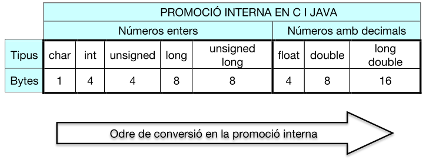
4.1.2. Promoció per assignació
Esta conversió la fa el compilador quan s'intenta assignar a una variable una expressió de diferent tipus.
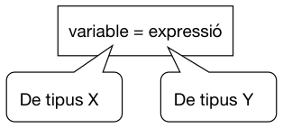
| Python: la variable passarà a ser del tipus de l'expressió | |
|---|---|
| C, Java: el tipus de la variable no canvia. És l'expressió la que canvia al tipus de la variable perquè es faça l'assignació | |
|---|---|
- En este cas diem que s'ha fet una promoció per assignació: el float 4.6 ha "promocionat" a l'int 4.
4.1.3. Promoció forçada (càsting)
El programador pot indicar que una expressió canvie a un tipus en concret. Eixa conversió es diu càsting o promoció forçada.
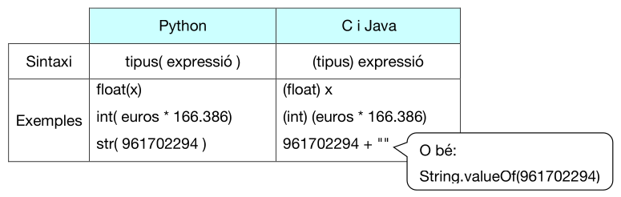
Els tipus possibles en Python són: int, float, str i bool.
| Exemple d'ús en C i Java | |
|---|---|
En este últim cas veiem que el càsting és útil per si volem fer una divisió d'emters però amb decimals en C i Java.
5. Precedència i associativitat d'operadors
Ací tenim una relació dels operadors ordenats per procedència de major a menor. En cas d'igualtat de precedència de divers operadors en una expressió, l'associativitat ens diu per on es comença a avaluar (d'esquerra a dreta o de dreta a esquerra).
| CATEGORÍA DE L'OPERADOR | OPERADORS PYTHON | OPERADORS JAVA | ASSOCIATIVITAT |
|---|---|---|---|
| Parèntesi, vectors | ( ) [ ] | ( ) [ ] | ESQUERRA |
| Operadors unaris | + - | ++ -- + - | DRETA |
| Potència | ** | DRETA | |
| Multiplicació, divisió i residu | * / // % | * / % | ESQUERRA |
| Suma i resta | + - | + - | ESQUERRA |
| Operadors relacionals | < <= > >= == != <> | < <= > >= == != | ESQUERRA |
| 'No' lògic | not | ! | ESQUERRA |
| 'i' lògic | and | && | ESQUERRA |
| 'o' lògic | or | || | ESQUERRA |
| Operador condicional | ?: | DRETA | |
| Assignacions | = += -= = *= /= //= %= | = += -= *= /= %= | DRETA |
No cal saber-se tot això de memòria. Simplement hem de saber que, per a avaluar les expressions, hi ha unes regles per vore què s'avalua primer. Davant del dubte, farem ús dels parèntesis per a indicar quines operacions volem que es facen primer.
Exercici 5. Expressions i tipus
Suposem que tenim estes variables en un programa en Python:
a = 12x = 2.5y = 0.6
Indica de quin és el valor de cadascuna de les següents expressions:
a + xx + yint(x) + yint(x) + int(y)int(x + y)a / 4a // 4a % 4a + x * 2a / a - 2a ** 2 + 1a < x or y < xnot(a < x)(a >= x) and (y <= a)
6. Eixida de dades: print
Les instruccions d'entrada i eixida permeten la construcció de programes interactius. És a dir, amb elles podrem mostrar dades en pantalla i introduir dades per teclat.
En Python:
- Eixida de dades: print
- Entrada de dades: input
6.1. Exemple senzill de print
Esta funció mostra per pantalla allò que se li passa com a paràmetre. Ja ha aparegut anteriorment. Anem a detallar el seu funcionament.
Veiem estos exemples:
| Python | |
|---|---|
Com podem vore:
- print pot rebre una o més dades com a arguments (separats per comes).
- Si els arguments són textos han d'anar entre cometes (simples o dobles).
- Es mostren els textos separats per 1 espai. Al final es posa un salt de línia.
- Les cadenes de text poden concatenar-se amb l'operador '+' però no posa espais entre elles. I no podem concatenar un text amb un número. Donaria error.
6.2. Altres paràmetres del print
print(objecte/s, sep=separador, end=finalitzador, file=fitxer)
- objecte/s --> textos, números, variables o expressions que volem mostrar (separats er comes).
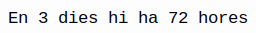
- sep=separador --> Ací indicarem amb una cadena de caràcters com volem que apareguen separats els objectes que mostrem. Si no posem res, el separador és un espai en blanc.
| Python | |
|---|---|
- end=finalitzador --> Cadena que es mostrarà al final del text. Si no posem res, el finalitzador és el fi de línia (caràcter '\n').
| Python | |
|---|---|
- Bucle on n va d'1 a 4 (ja ho veurem)
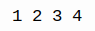
- file=fitxer --> Si no volem que es mostre per pantalla sinó a un fitxer.
| Python | |
|---|---|
- El mode "a" afig el text al final del fitxer. El mode "w" reescriu el fitxer.
- Fins que no es "tanca" el fitxer, no s'escriu el buffer en ell.
6.3. Usant el print amb format (ús de f-strings)
Suposem que volem mostrar els articles comprats, en forma de taula:
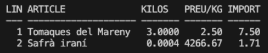
Què passaria si cada part de cada línia la separem amb un tabulador?
Segons les dades que tinguen les variables, podria ser que ens desquadrara tot:
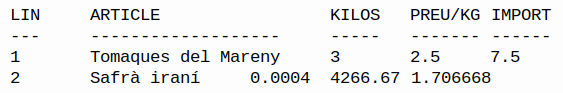
Això és degut a que els noms dels articles són de distinta llargària i els números no sempre tenen els mateixos decimals, etc.
Per a evitar això (a partir de la versió 3.6 de Python) tenim els f-strings, és a dir: "cadenes amb format", on podrem especificar el format que tindrà cada variable que posem en la cadena. Recordem que volíem que l'aspecte fora este:
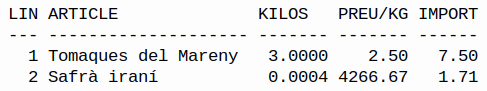
Per tant, li haurem de dir que en cada línia d'articles:
- El número de línia ocupe 3 posicions
- El nom de l'article ocupe 20 posicions
- Els kilos ocupen 7 posicions (4 d'elles que siguen decimals)
- El preu que ocupe 7 posicions (2 d'elles que siguen decimals)
- L'import que ocupe 6 posicions (2 d'elles decimals)
I la forma de fer-ho amb el f-string és així:
print(f"{linia:3} {article:20} {quantitat:7.4f} {preu:7.2f} {quantitat*preu:6.2f}")
És a dir, abans de la cadena es posa una f (o F), i cada variable o expressió es posa dins les claus i especificant el format després dels dos punts. Exemples:
El resultat seria:
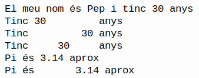
Observem que emprem <, > i ^ per a posar el valor a l'esquerra, dreta o centrat. I per als float indiquem també quants decimals volem (i li posem una f).
Realment els f-strings no tenen res a vore amb el print, sinó que serveix per a crear una cadena amb dades amb el format que volem. Per exemple:
| Python | |
|---|---|
A més, Python disposa de moltes operacions que podem fer en una cadena: passar-la a minúscules, a majúscules, obtindre una subcadena... I algunes de les operacions són alineació a dreta, esquerra, centrat.
En VSCode (i altre IDEs), si posem el punt al costat d'una variable (o constant) de tipus str, vorem les operacions que podem fer amb ella:
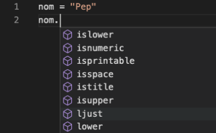
Per tant, podem fer altres coses en les cadenes sense usar els f-strings. Ací tenim uns exemples:
| Python | |
|---|---|
- En compte d'eixe '_' podem posar qualsevol caràcter, com per exemple un espai.
7. Entrada de dades: input
Serveix per a que un programa puga demanar dades per teclat. Serà un poc diferent segons els tipus de dades que volem introduir.
Vegem-ho amb exemples:
7.1. Entrada de text
- Ací l'execució espera que li posem per teclat un valor i polsem "INTRO". El valor introduït es guardarà a la variable nom.
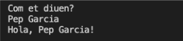
Ara bé, l'input de Python també permet indicar el que estem demanant, sense haver de fer abans el print:
- Ací mostrarà el text, i farà l'input normal.
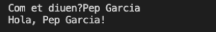
7.2. Entrada de números
El problema és si, en compte de demanar un text per teclat, volem demanar un número, ja que l'agafarà com a text i no podrem fer operacions aritmètiques amb ell:
Això provoca l'error:
TypeError: can only concatenate str (not "int") to str
Això és degut a que input sempre retorna un str. Per això, en l'expressió num + 1 intenta concatenar en compte de sumar. I dona error perquè no es poden concatenar números sinó textos.
Per tant, si volem tractar-lo com a enter caldrà fer un càsting (conversió de tipus):
| Python | |
|---|---|
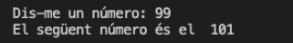
O bé es podria fer l'input i el càsting en la mateixa instrucció:
- Es fa càsting sobre l'entrada de dades
En compte d'int també es pot fer casting a float, si fora el cas.
7.3. Diverses entrades en un mateix input
En un input podem demanar diverses dades separades per un espai en blanc (o pel caràcter que volem). Ara bé: això no té res a vore amb l'input, sinó amb el mètode split del tipus de dades str. Veiem uns exemples:
| Python | |
|---|---|
- Fem 3 assignacions alhora. split separa una cadena en una llista de cadenes.
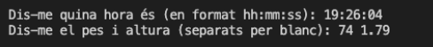
Veiem que quan fem split, en l'assignació cal posar tantes variables com dades s'espera que s'introduïsquen. Si no, donarà error.
Cal tindre en compte que després caldria fer els càstings corresponents a int o float de cada variable.
Exercici 6. Entrada i eixida de dades
Fes un programa que pregunte quants anys té algú i que mostre per pantalla la quantitat d'anys que falten per a la majoria d'edat i per a jubilar-se.
Exercici 7
Programa que pregunte per la base i l'altura d'un triangle i mostre per pantalla l'àrea d'eixe triangle
Exercici 8
Demana per teclat les dades de 2 llibres: títol, autor i preu (permet decimals). Després cal mostrar les dades en forma de taula: 30 caràcters per al títol, 20 per a l'autor i 10 per al preu (incloent 2 decimals i alineat a la dreta)
Exercici 9
Demana per teclat només un valor: una data (per exemple 6/9/2024). Després escriu eixa data però amb el format: "6 del 9 de 2024".
8. Exercicis
Exercici 10
Escriu el resultat de les següents expressions:
5 / 2 + 17 % 33 * 6 / 2 + 18 / 3 * 242 * 2 / 3 / (5 + 2)((5 + 3) / 2 * 3) / 2 - int(28.7) // 4 + 29 % 3 * 43 <= 445 <= 7 or not (5 >= 7)(8 * 2 < 5 or 7 + 2 > 9) and 8 - 5 < 18(2 * 7 > 5 or 7 / 2 == 3) and (7 > 25 or not True) and True35 > 47 and 9 == 9 or 35 != 3 + 2 and 3 >= 39 == 15 or 8 != 5 and 7 == 48 > 8 or 7 == 7 and not(5 < 5)4 + 2 < 8 and 24 + 1 == 25 or True
Exercici 11
Escriu una expressió on s'especifique que una variable numèrica de nom quant siga menor o igual que 500 i múltiple de 5 però distinta de 100.
Exercici 12
Troba els errors en el següent programa que calcula l'àrea d'un cercle a partir del radi. Després copia'l amb les correccions i executa'l.
Exercici 13
Sense executar el programa, digues què mostrarà per pantalla:
Exercici 14
Contesta les següents qüestions tipus test:
- Els tipus primitius en Python són:
- bool, char, short, int, long, float, double
- int, float, bool, str
- caràcters, variables i constants
- Es defineix
a = 5,b = 2ic = 0. Quin serà el valor decdesprés d'esta instrucció:c = a > b- 3
- 2
- True
- False
- Error
- Quin és el valor d'esta expressió:
10 / int(4.5)- 2
- 2.5
- 3
- Altra cosa